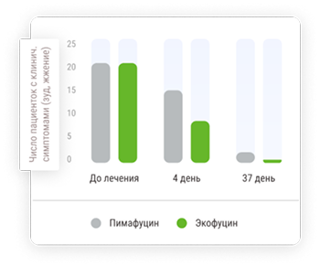
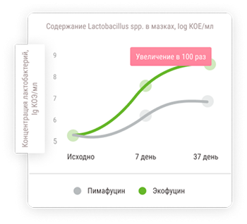

Экофуцин®
разрешен для лечения молочницы
на всех сроках
беременности1, 2, 3
Защита здоровья мамы и будущего малыша
Почему при беременности и грудном вскармливании для лечения молочницы выбирают Экофуцин®?
-
1
Экофуцин® оказывает только местное действие и не оказывает вредного воздействия на плод1, 2, 3, 4
-
2
Экофуцин® не только устраняет причину молочницы – грибы рода Candida, но и способствует восстановлению микрофлоры влагалища, увеличивая количество полезных лактобацилл1,4
-
3
Экофуцин® рекомендован обществом акушеров-гинекологов России2
Схема применения препарата Экофуцин®
Схема лечения1,2
Суппозитории применяют 1 раз в сутки, на ночь, вводят во влагалище, находясь в положении лежа, как можно глубже1
Продолжительность курса лечения составляет 6 дней. После исчезновения симптомов заболевания рекомендуется продолжать лечение еще несколько дней1
Дополнительными условиями эффективной терапии молочницы являются: отказ от вредных привычек, диета с ограничением углеводов, ношение нижнего белья из натуральных тканей и пр.
*Схема применения препарата Экофуцин® беременным женщинам может назначаться лечащим врачом индивидуально.
Молочница при беременности
Молочница – заболевание слизистой влагалища и вульвы, вызываемое дрожжеподобными грибами рода Candida, с которым сталкивается 50% женщин во время беременности5.
-
Беременность – это особенный период в жизни женщины, организм перестраивается – изменяется гормональный фон, возрастает уровень прогестерона, что приводит к снижению иммунитета, повышается уровень эстрогенов, в связи с чем в слизистой оболочке влагалища накапливается гликоген – питательная среда для дрожжеподобных грибов рода Candida.
-
В группе риска по возникновению рецидивирующей формы молочницы находятся те беременные женщины, которые уже имели в анамнезе эпизоды молочницы.
-
Лактобактерии являются преобладающими микроорганизмами микрофлоры влагалища здоровой женщины. Нормальная концентрация лактобактерий обеспечивает необходимую кислотность во влагалище, что подавляет рост грибов. Также лактобактерии участвуют в формировании местного иммунитета у женщин.
-
Помимо этого, во время молочницы часто нарушается микрофлора влагалища – количество лактобактерий резко снижается. Эти изменения приводят к рецидивам молочницы.
Симптомы молочницы у беременной женщины:
Появление хотя бы одного из симптомов является причиной для внепланового обращения к врачу.
-
Зуд и жжение в области вульвы и/или влагалища, отечность и раздражение в области наружных половых органов
-
Выделения «творожистого характера» из влагалища, иногда появление неприятного запаха
-
Боли во время и после полового контакта
-
Нарушение и болезненность мочеиспускания
Почему важно вовремя диагностировать и лечить молочницу у беременной?
Беременная женщина с молочницей является источником инфицирования своего будущего ребенка. Инфицирование от матери к ребенку происходит в 75-80% случаев5. Заражение новорожденного происходит при прохождении по родовым путям (кожные покровы ребёнка соприкасаются с инфицированными слизистыми родовых путей матери). У новорожденных кандидоз проявляется поражением слизистых оболочек и кожи5, что может привести к негативным последствиям. Для недоношенных детей заражение грибами рода Candida особенно опасно5.
Часть женщин является бессимптомными носителями дрожжеподобных грибов рода Candida и не испытывают ни дискомфорта, ни проявления заболевания на протяжение всего периода беременности5
Своевременное, безопасное и эффективное лечение молочницы
у
беременной является важной задачей
Лечение молочницы
Безопасность и эффективность – основные критерии выбора препарата при лечении молочницы у беременных
Чем раньше проведена диагностика и назначено лечение молочницы беременной женщине, тем меньше риск негативных последствий и осложнений на течение беременности и для здоровья матери, и её будущего ребёнка.
Лечение должно быть направлено на решение двух задач: устранения причины молочницы (грибы рода Candida) и восстановление микрофлоры влагалища. Важно знать, что не все препараты разрешены к применению во время беременности. Например, большинство препаратов для приема внутрь (системные) и ряд препаратов для местного применения для лечения молочницы противопоказаны во время беременности.
Эффективность и безопасность применения препарата Экофуцин® доказана клиническими исследованиями
-
Экофуцин способствует более быстрому выздоровлению пациенток с молочницей.
 -
Экофуцин способствует увеличению количества собственных лактобактерий во влагалище и снижению риска развития рецидива молочницы.
 -
Подробнее
Для беременных Москва 40 пациентокКлиническое излечение достоверно раньше наступило в группе пациенток, применявших препарат Экофуцин.
Кузьмин В.Н., Богданова М.Н. Экофуцин® – первый препарат для эрадикации грибов рода Candida с эффектом стимуляции роста лактобацилл у беременных женщин. РМЖ. 2020; 1; 28-33